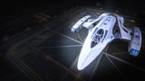

Макс. скорость / с форсажем
280 / 380 м/с
Courier — стильный пассажирский корабль для небольших групп. Он очень лёгкий, поэтому далеко прыгает и быстро летит на форсаже, а малая площадка позволяет садиться где угодно. Отсеки не больше размера 3 ограничивают вместимость примерно 12 местами и класс кают — бизнес-классом. Бонуса комфорта специализированного лайнера нет. Летайте на нём на короткие дорогие рейсы или возите пассажиров бизнес-класса, пока набираете имперский ранг. По вместимости и наличию кают первого класса и люкс любой настоящий лайнер лучше.

Оценка пригодности корабля от 1 до 100 учитывает его полностью улучшенную сборку и сравнивает её с другими кораблями в этой роли. Подробнее: как оцениваются корабли.
Imperial Courier — изящный лёгкий скоростной корабль Gutamaya, в пассажирской роли скорее челнок, чем лайнер. При массе всего 35 т он далеко прыгает для своего класса, хорошо разгоняется на форсаже и садится на любом аванпосте. Это полезно на коротких экскурсионных и VIP-рейсах. Но он не рассчитан на толпы пассажиров.
Главный предел — каюты. Самый большой дополнительный отсек имеет размер 3: принимает каюту эконом- или бизнес-класса, но не принимает каюту первого класса или люкс. Если один отсек отдать под щит, мест при полной загрузке останется около дюжины. Корабль Gutamaya не получает бонуса комфорта лайнера, поэтому каждое место оплачивается по стандартному тарифу. Это быстрый и дешёвый способ выполнить несколько дорогих заказов, но по объёму и премиальным каютам он уступает любому специализированному лайнеру.
Короткие дорогие рейсы: несколько заказов эконом- или бизнес-класса между соседними системами, экскурсионные маршруты, где важны дальность и скорость, и стильные пассажирские перевозки во время набора имперского ранга.
В пассажирской роли у Courier четыре отличия: два в его пользу и два против.
Courier берёт около дюжины пассажиров, а выше бизнес-класса не поднимается. Это лишь малая часть возможностей любого лайнера, и бонуса комфорта для повышения выручки с места нет. Нужен также имперский ранг мастера. Сильные стороны — скорость, дальность и доступ к малым площадкам за небольшие деньги на нескольких заказах. По вместимости, комфорту и премиальным каютам Dolphin, Orca и Beluga гораздо лучше.
Быстрый, дешёвый и дальнобойный челнок. Вместимость около 12 мест, предел в бизнес-классе и отсутствие бонуса комфорта оставляют его в нижней части пассажирского рейтинга.
Итоговая 52/100 — итоговая оценка по критериям пассажирской роли в порядке важности. Для каждого критерия есть вес (его доля из 100). Баллы по нему зависят от того, как корабль показал себя на фоне остальных. Сумма баллов даёт итоговую оценку.
| Критерий | Баллы | Почему столько |
|---|---|---|
| Вместимость и классы кают | 9/35 | Дополнительные отсеки не больше размера 3: всего около 12 мест экономкласса, меньше при наличии бизнес-каюты. Каюты первого класса и люкс не помещаются вовсе. Это самый тесный пассажирский корабль с наибольшим ограничением по классам кают. |
| Комфорт | 6/20 | Корабль Gutamaya не получает бонуса комфорта специализированного лайнера. Все места оплачиваются по стандарту, а тесные каюты для коротких маршрутов оцениваются невысоко. Доход с заказа намного ниже, чем у лайнеров Saud Kruger. |
| Дальность прыжка и бак | 15/20 | При массе 35 т это один из самых лёгких корпусов в игре. Улучшение дальности G5 на FSD размера 3 даёт около 35 св. лет с загрузкой. Это позволяет связывать экскурсионные маяки за меньшее число прыжков, чем на большинстве небольших туристических кораблей. |
| Щит и безопасность | 12/15 | 380 м/с штатно, около 460 после улучшений, усиленный двухконтурный щит и два усилителя с усиленной конструкцией делают Courier трудной целью для перехвата и крепким для своего размера. Его главная защита — скорость; уступает он только лайнерам со щитами уровня боевого корабля. |
| Размер площадки и стоимость | 10/10 | Малая площадка открывает доступ к любому аванпосту, куда не сядут большие лайнеры. Корпус примерно за 2.5 млн кр. — один из самых дешёвых в роли. Из требований — только невысокий имперский ранг мастера, полезный и для других целей. |
| Взвешенный итог | 52/100 | Эта сумма совпадает с общей оценкой корабля в этой роли. |
Вес критерия отражает приоритеты авторов гайда, а не формулу игры. Длина полосы показывает, какую долю от максимума корабль набрал по этому критерию. Подробнее: как оцениваются корабли.
Таблицы сравнивают корабли именно для перевозки пассажирови разделяют их по размеру посадочной площадки. Столбец Вместимость кают показывает общее число мест под каюты в дополнительных отсеках; рейтинг от 1 до 100 сопоставим с остальными досье.
| Корабль | Класс | Вместимость кают | Плюсы и минусы | Оценка |
|---|---|---|---|---|
| Dolphin | Малая | ~88 т | Выше оценка; комфорт; площадка и ценаКаюты | 80 |
| Imperial Courier этот | Малая | ~34 т | — отправная точка для сравнения | 52 |
В рейтинге 2 пассажирских корабля для малых площадок. Лидер — Dolphin (80). Они садятся там же, где Cobra, поэтому сравнивать стоит прежде всего с ними.
| Корабль | Класс | Вместимость кают | Плюсы и минусы | Оценка |
|---|---|---|---|---|
| Корабль Beluga Liner | Большая | ~370 т | Оценка выше; каюты; комфортДальность | 95 |
| Imperial Cutter | Большая | ~794 т | Оценка выше; каюты; щитКомфорт | 89 |
| Orca | Большая | ~194 т | Выше оценка; комфорт; площадка и ценаДальность | 88 |
| Anaconda | Большая | ~470 т | Выше оценка; дальность; каютыКомфорт | 82 |
| Imperial Clipper | Большая | ~250 т | Оценка выше; щит; дальностьКомфорт | 64 |
| Корабль Caspian Explorer | Большая | ~434 т | Оценка выше; каюты; дальностьПлощадка и цена | 60 |
| Корабль Type-7 Transporter | Большая | ~310 т | Оценка выше; каюты; площадка и ценаКомфорт | 56 |
| Корабль Type-9 Heavy | Большая | ~790 т | Оценка выше; каюты; площадка и ценаКомфорт | 56 |
| Panther Clipper Mk II | Большая | ~662 т | Каюты; щитНиже оценка; площадка и цена | 48 |
Оценены 9 больших пассажирских кораблей. Лидирует Корабль Beluga Liner (95). Они превосходят Asp по показателям, но требуют больших площадок и бюджета.
| Корабль | Класс | Вместимость кают | Плюсы и минусы | Оценка |
|---|---|---|---|---|
| Lynx Highliner | Средняя | — | Выше оценка; комфорт; площадка и ценаЩит | 90 |
| Python | Средняя | ~294 т | Оценка выше; щит; размер площадки и ценаКомфорт | 70 |
| Krait Phantom | Средняя | ~190 т | Оценка выше; дальность; площадка и ценаКомфорт | 64 |
| Корабль Asp Explorer | Средняя | ~130 т | Оценка выше; площадка и цена; дальностьКомфорт | 60 |
| Mandalay | Средняя | ~154 т | Оценка выше; площадка и цена; дальностьКомфорт | 54 |
| Corsair | Средняя | ~318 т | Каюты; щитНиже оценка; комфорт | 50 |
| Krait Mk II | Средняя | ~230 т | Каюты; дальностьНиже оценка; площадка и цена | 46 |
| Type-8 Transporter | Средняя | ~406 т | Каюты; площадка и ценаНиже оценка; комфорт | 46 |
В рейтинге 8 пассажирских кораблей для средних площадок. Лидер — Lynx Highliner (90). Эти корабли дешевле и садятся на меньшие площадки. По затратам они выигрывают, но относятся к другому классу площадок.
При цене около 2.5 млн кр. Courier очень дёшев, а для покупки нужен лишь промежуточный имперский ранг мастера. Несколько кают, двухконтурный щит и основные модули класса A доведут общую стоимость примерно до 9 млн. Для дальности и скорости имеет смысл улучшать только FSD и маневровые двигатели .
Courier хорошо вписывается в имперскую карьеру: продвигаясь к рангу сквайра и разрешению на Ахенар, вы пройдёте нужный ранг мастера. По пути можно открыть корабль и выполнить несколько оплачиваемых рейсов.
Лёгкий пассажирский челнок за 2.5 млн кр. с невысоким имперским рангом для покупки. Стильный способ заработать на небольших заказах, пока продвигаетесь по имперскому флоту, а не серьёзный туристический бизнес.
Сборка лёгкого челнока для коротких рейсов: небольшая смешанная компоновка из одной каюты бизнес-класса и мест экономкласса за двухконтурным щитом. Дальность и скорость даёт сам корпус массой 35 т. Начальная сборка требует только покупок, класс A даёт рабочую основу, а инженерные улучшения повышают дальность и безопасность пассажиров. Courier мал для этой роли: около 11 мест и не выше бизнес-класса. Это челнок для небольших VIP-групп, а не массовый лайнер.
| Отсек | Начальная · только покупка | Класс A · без улучшений | С инженерными улучшениями | Примечания |
|---|---|---|---|---|
| Внешние крепления | ||||
| Крепление 1 | — | 0A Усилитель щита | G5 Усиленная конструкция + Суперконденсаторы | Класс A усилитель щита. Усиленная конструкция повышает запас МДж небольшого двухконтурного щита — недорогая защита пассажиров на лёгком корабле. |
| Крепление 2 | — | 0A Усилитель щита | G5 Усиленная конструкция + Суперконденсаторы | Второй усилитель с усиленной конструкцией. Несколько усилителей — самый дешёвый способ получить щит, выдерживающий перехват. |
| Крепление 3 | — | 0I Точечная оборона | G1 Дополнительный боезапас (без экспериментального эффекта) | Необязательно. «Дополнительный боезапас» даёт больше выстрелов. Точечная оборона сбивает ракеты и торпеды, нацеленные на хрупкий пассажирский корабль. |
| Крепление 4 | — | 0I пусковая установка дипольных отражателей | G1 Дополнительный боезапас (без экспериментального эффекта) | Необязательно, низкий приоритет: увеличение боезапаса даёт больше залпов дипольные отражатели . Дипольные отражатели сбивает наведение подвижных и турельных орудий, чтобы вы могли уйти на форсаже. |
| Основные модули | ||||
| Обшивка | Лёгкий сплав | Лёгкий сплав | Облегчение 5-й ступени (без экспериментального эффекта) | |
| Энергетическая установка | 4E Энергетическая установка | 4A Энергетическая установка | G5 Низкие выбросы + Рассеивание тепла | «Низкие выбросы» снижают нагрев и заметность установки, делая рейс комфортнее; «Рассеивание тепла» отводит остаточный нагрев. |
| Маневровые двигатели | 3E Маневровые двигатели | 3A Маневровые двигатели | G5 Грязная настройка двигателей + Форсированные двигатели | Класс A с «Грязной настройкой двигателей» помогает уйти от перехвата: лучшая защита Courier — когда его не поймали. Форсированные двигатели усиливают разгон. |
| Рамочно-сместительный двигатель (FSD) | 3E Рамочно-сместительный двигатель (FSD) | 3A Рамочно-сместительный двигатель (FSD) | G5 «Увеличенная дальность» + Управление массой | Класс A с «Увеличенной дальностью» на G5 в сочетании с «Управлением массой». Главное преимущество такого лёгкого корпуса — дальность; для пассажирского корабля Courier прыгает хорошо. |
| Система жизнеобеспечения | 1E Система жизнеобеспечения | 1D Система жизнеобеспечения | G5 Облегчение (без экспериментального эффекта) | Класс D экономит массу; Облегчение ещё снижает массу и увеличивает дальность прыжка. жизнеобеспечения нет экспериментального эффекта. |
| Распределитель энергии | 3E Распределитель энергии | 3A Распределитель энергии | G5 Упор на двигатели + Кластерные конденсаторы | Упор на двигатели отдаёт приоритет форсажу на распределителе класса 3, чтобы уходить от угрозы. «Кластерные конденсаторы» увеличивают запас энергии. |
| Сенсоры | 2E Сенсоры | 2D Сенсоры | G5 Облегчение (без экспериментального эффекта) | Поставьте класс D с «Облегчением». Лайнеру не нужна большая дальность сенсоров, а меньшая масса увеличивает дальность прыжка. |
| топливный бак | 3C топливный бак | 3C топливный бак | (нет чертежа улучшения) | Штатный бак класса C имеет фиксированную вместимость и не улучшается у инженеров. |
| Дополнительные отсеки | ||||
| Размер 3 | 3E Пассажирская каюта экономкласса | 3D Пассажирская каюта бизнес-класса | (нет чертежа улучшения) | Каюта бизнес-класса 3 (3 места) — максимум для премиальных заказов на этом корпусе. В отсеки размера 3 не входят каюты первого класса или люкс, поэтому бизнес-класс — предел. |
| Размер 3 | 3E Пассажирская каюта экономкласса | 3E Пассажирская каюта экономкласса | (нет чертежа улучшения) | Каюта экономкласса 3 (4 места) вмещает основную часть пассажиров. Вторая бизнес-каюта даст полностью премиальный набор ценой двух мест. |
| Размер 2 | — | 2E Пассажирская каюта экономкласса | (нет чертежа улучшения) | Каюта экономкласса 2 (2 места). В отсеки размера 2 помещается только эконом, премиальные каюты сюда не войдут. |
| Размер 2 | — | 2E Пассажирская каюта экономкласса | (нет чертежа улучшения) | Вторая каюта экономкласса 2 (2 места) дополняет небольшой набор. |
| Размер 2 | 2E Генератор щита | 2C Генератор двухконтурного щита | G5 Усиленный + Быстрая зарядка | Двухконтурный щит быстро восстанавливается под огнём, защищая пассажиров. «Усиленный» повышает запас МДж, а «Быстрая зарядка» ускоряет восстановление. Размер подобран для лёгкого корпуса. |
| Размер 1 | — | 1A Банк щита | G4 Специализированный (без экспериментального эффекта) | Необязательно, низкий приоритет: специализация снижает всплеск нагрева и потребления. Быстро восстанавливает щит в аварийной ситуации. |
| Размер 1 | — | 1E Стыковочный компьютер | (нет чертежа улучшения) | Улучшенный стыковочный компьютер автоматически выполняет посадку. Это небольшой бонус к удобству; инженерных улучшений нет. |
| Размер 1 | — | 1A Топливозаборник | (нет чертежа улучшения) | Топливозаборник позволяет пополнять бак на экскурсионных маршрутах, чтобы небольшой запас топлива не сорвал рейс. Инженерных улучшений нет. |
| Планировщики и экспорт | ||||
| Открыть в Coriolis | открыть | открыть | открыть | Открывает сборку на coriolis.io. |
| Открыть в EDSY | открыть | открыть | открыть | Открывает сборку на edsy.org. |
| Скопировать SLEF | Копирует выбранную сборку в формате экспорта оснащения корабля (SLEF). | |||
Дополнительные отсеки Courier не больше размера 3, поэтому каюты первого класса и люкс недоступны, а при полной загрузке мест лишь около 11. Зато очень лёгкий корпус даёт дальний прыжок, высокую скорость для защиты и доступ к любому аванпосту. Возите пассажиров на коротких дорогих или деловых рейсах, а не в массовом потоке.
Получите ранг мастера, купите корпус (~2.5 млн кр.) со штатной обшивкой из лёгкого сплава и поставьте две пассажирские каюты экономкласса в отсеки размера 3 и базовый штатный генератор щита класса E для защиты. Даже начальная сборка даёт около восьми мест и щит: достаточно, чтобы сразу начать выполнять дешёвые заказы экономкласса.
Оставьте три средних оружейных крепления пустыми: это невооружённый пассажирский корабль. Внешние крепления и малые отсеки размера 1 не заполняйте до перехода на класс A. Защитой служит скорость; у Courier нет военных отсеков, поэтому обшивку из лёгкого сплава оставляйте на всех этапах.
Порядок перехода на класс A для малого пассажирского челнока:
В первую очередь улучшайте FSD и маневровые двигатели . Сильные стороны Courier — дальность и скорость. Больше дюжины мест не будет, поэтому не гонитесь за вместимостью. Берите дорогие заказы или пассажиров бизнес-класса там, где окупается малый, быстрый и безопасный корабль.
Стандартная схема для перелётов с упором на дальность, скорость и безопасность пассажиров. Закрепите чертежи для дистанционных улучшений G1→G5; за экспериментальными эффектами наведайтесь к инженерам лично.
Ориентировочные показатели для трёх сборок. Точный результат зависит от оснащения:
| Модуль | Чертёж | Экспериментальный эффект | Инженер |
|---|---|---|---|
| Рамочно-сместительный двигатель (FSD) (3) | «Увеличенная дальность» (5-я ступень) | Управление массой | Felicity Farseer |
| Маневровые двигатели (3) | Грязная настройка двигателей (5-я ступень) | Форсированные двигатели | Professor Palin / Mel Brandon |
| Энергетическая установка (4) | Низкие выбросы (5-я ступень) | Рассеивание тепла | Hera Tani |
| Двухконтурный щит (2) | Усиленный (5-я ступень) | Быстрая зарядка | Lei Cheung |
| Усилители щита (0) | Усиленная конструкция (5-я ступень) | Суперконденсаторы | Didi Vatermann |
| Распределитель энергии (3) | Упор на двигатели (5-я ступень) | Кластерные конденсаторы | The Dweller |
| Система жизнеобеспечения / Сенсоры | Облегчение (5-я ступень) | (нет) | Etienne Dorn |
| Обшивка | Облегчение (ступень 5) | — | Selene Jean |
Инженерные улучшения повышают два важных для Courier показателя: дальность и скорость. Число мест почти не меняется — не хватает отсеков. Улучшенный челнок на скорости около 460 м/с и с дальностью около 35 св. лет везёт дюжину пассажиров за быстро восстанавливающимся щитом примерно на 450 МДж. Он безопасен, быстр и дёшев, но на массовом потоке не заработает. Бонуса комфорта нет ни на одном этапе, поэтому выручка с места остаётся стандартной.
Подойдёт любой короткий пассажирский заказ внутри или рядом с пространством Империи . Выбирайте имперские системы, чтобы рейсы повышали имперский ранг на пути к разрешению на Ахенар. Скорость и дальность лучше проявляются на коротких разрозненных рейсах, чем в долгих перевозках больших групп.
Imperial Courier — красивый, быстрый и недорогой пассажирский челнок. Далеко прыгает, садится на малые площадки и отлично подходит для нескольких быстрых заказов эконом- или бизнес-класса, пока вы набираете имперский ранг. Но дюжина мест, потолок в бизнес-классе и отсутствие бонуса комфорта оставляют его среди отстающих в пассажирской роли. Выбирайте его ради стиля, скорости и небольших дорогих рейсов. Как только понадобится вместимость или комфорт, переходите на Dolphin или настоящий лайнер.
Цифры в статье сверены авторами оригинала с источниками ниже.